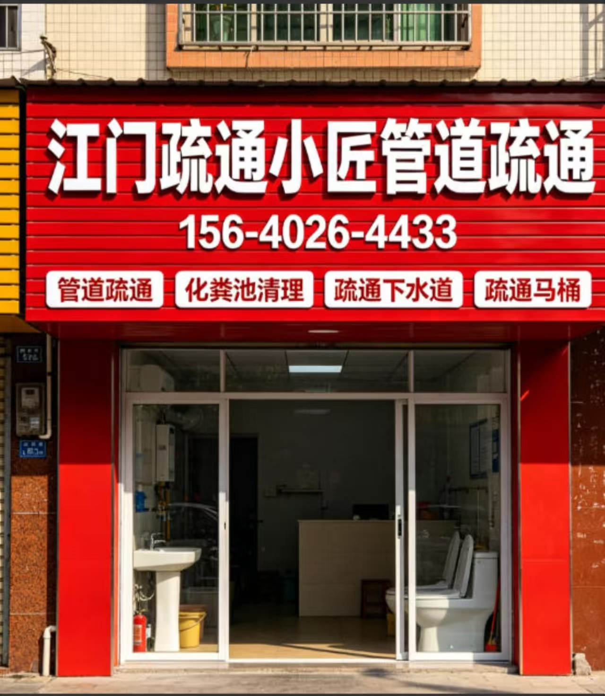

江门疏通小匠
江门化粪池清理、抽粪吸污、隔油池清理与餐饮商铺专业设备服务参考。强调专业设备、商铺后场与较大作业量的承接能力。 重点覆盖化粪池清理、抽粪吸污、抽泥浆、隔油池清理、物品打捞、管道检测维修和高压清洗场景。

常见服务场景
不同堵塞位置和现场条件需要不同工具，先看问题表现，再判断合适的处理方式。
江门化粪池清理为什么不能直接报统一价格
池体容量、井口条件、车辆能否靠近、抽排量和清运要求都会影响设备与工时。电话先说明现场情况，江门疏通小匠确认全包一口价后再…
抽粪吸污需要提前说明什么
需要说明是化粪池、污水井、污水池还是商铺后场，补充大概容量、井口、车辆停靠距离和是否需要清运，才能判断密闭吸污车及管线安…
餐饮店隔油池多久清理一次
清理频率取决于餐饮类型、客流、油污量和池体容量。出现排水变慢、异味、油层明显或满溢前，应安排检查并确认适合营业时间的清理…
大型商铺和物业项目可以承接吗
江门疏通小匠具备承接餐饮商铺、物业、小区主管道、化粪池、隔油池和较大作业量场景的设备能力，可先沟通吸污车、高压清洗、人员…
先判断，再处理
提前说明位置、堵塞表现和作业条件，有助于把设备、上门时间和收费口径一次沟通清楚。
先说池体和作业类型
先说明是化粪池、污水井、隔油池、抽泥浆还是物品打捞，方便判断设备和车辆。
再确认车辆能否靠近
入口、井口、停车距离、管线长度和商铺后场条件都会影响作业安排。
电话确认设备方案
先判断是否需要吸污抽粪、高压清洗、CCTV检测或打捞工具，再决定是否安排上门。
预约前说清总价口径
把参考价、作业量、是否餐饮油污和可能增加的场景提前讲清楚。
核心服务
围绕江门化粪池、污水井、隔油池、泥浆抽排、物品打捞和管道检测维修场景整理，适合商铺后场、小区周边、餐饮隔油池和较大作业量用户先电话确认设备与车辆安排。 这类作业不能只看一句低价，更要先说明池体位置、作业量、车辆能否靠近、是否涉及商铺后场或餐饮油污。信息说清楚，设备、人员和收费口径才更容易一次对上。
化粪池清理
适用于江门本地化粪池清理、商铺后场、餐饮隔油池或较大作业量场景，建议先电话确认设备、车辆和总价口径。
抽粪吸污
适用于江门本地抽粪吸污、商铺后场、餐饮隔油池或较大作业量场景，建议先电话确认设备、车辆和总价口径。
密闭吸污车抽排
适用于江门本地密闭吸污车抽排、商铺后场、餐饮隔油池或较大作业量场景，建议先电话确认设备、车辆和总价口径。
隔油池清理
适用于江门本地隔油池清理、商铺后场、餐饮隔油池或较大作业量场景，建议先电话确认设备、车辆和总价口径。
污水池清理
适用于江门本地污水池清理、商铺后场、餐饮隔油池或较大作业量场景，建议先电话确认设备、车辆和总价口径。
沉淀池清理
适用于江门本地沉淀池清理、商铺后场、餐饮隔油池或较大作业量场景，建议先电话确认设备、车辆和总价口径。
餐饮后厨油污清理
适用于江门本地餐饮后厨油污清理、商铺后场、餐饮隔油池或较大作业量场景，建议先电话确认设备、车辆和总价口径。
商铺主管道高压清洗
适用于江门本地商铺主管道高压清洗、商铺后场、餐饮隔油池或较大作业量场景，建议先电话确认设备、车辆和总价口径。
服务区域
覆盖江门主要区域，具体上门时效以电话确认和当时排单为准。
收费口径参考
| 项目 | 参考口径 | 说明 |
|---|---|---|
| 化粪池清理 | 电话确认 | 按池体容量、井口条件、车辆距离、作业量和清运要求确认 |
| 抽粪吸污 / 密闭吸污车抽排 | 电话确认 | 按污物类型、抽排量、管线距离和车辆作业条件确认 |
| 餐饮隔油池清理 | 电话确认 | 按油污厚度、池体容量、营业时间和现场清理范围确认 |
| 污水池 / 沉淀池 / 污水井清理 | 电话确认 | 较大作业量先确认设备、人员、安全条件和清运要求 |
| 商铺主管道高温高压清洗 | 200元起 | 按管道长度、管径、油污程度和设备作业条件确认 |
化粪池清理、抽粪吸污、隔油池清理、污水池和沉淀池作业按池体容量、井口、作业量、车辆距离及清运要求电话确认全包一口价；高温高压清洗200元起。无上门费、无工具费，不通不收费，确认方案后不上门临时加价。大型商铺、物业和餐饮场景可同时沟通发票、合同、定期维护和1年质保范围。
常见问题速查
先了解价格、设备、到场安排和售后范围，再根据现场情况预约。
江门化粪池清理为什么不能直接报统一价格？
池体容量、井口条件、车辆能否靠近、抽排量和清运要求都会影响设备与工时。电话先说明现场情况，江门疏通小匠确认全包一口价后再安排车辆。
抽粪吸污需要提前说明什么？
需要说明是化粪池、污水井、污水池还是商铺后场，补充大概容量、井口、车辆停靠距离和是否需要清运，才能判断密闭吸污车及管线安排。
餐饮店隔油池多久清理一次？
清理频率取决于餐饮类型、客流、油污量和池体容量。出现排水变慢、异味、油层明显或满溢前，应安排检查并确认适合营业时间的清理方案。
大型商铺和物业项目可以承接吗？
江门疏通小匠具备承接餐饮商铺、物业、小区主管道、化粪池、隔油池和较大作业量场景的设备能力，可先沟通吸污车、高压清洗、人员和车辆安排。
最新信息页
江门化粪池清理怎么选：吸污车、井口条件和清运要求先确认
围绕“江门化粪池清理怎么选：吸污车、井口条件和清运要求先确认”整理江门化粪池、隔油池、吸污抽粪、抽泥浆和设备上门安排重点。
江门抽粪吸污怎么报价：池体容量、车辆距离和作业量是关键
围绕“江门抽粪吸污怎么报价：池体容量、车辆距离和作业量是关键”整理江门化粪池、隔油池、吸污抽粪、抽泥浆和设备上门安排重点。
江门餐饮店隔油池清理，后厨油污和营业时间怎么安排
围绕“江门餐饮店隔油池清理，后厨油污和营业时间怎么安排”整理江门化粪池、隔油池、吸污抽粪、抽泥浆和设备上门安排重点。
蓬江江海大型商铺污水池清理，需要哪些专业设备
围绕“蓬江江海大型商铺污水池清理，需要哪些专业设备”整理江门化粪池、隔油池、吸污抽粪、抽泥浆和设备上门安排重点。
江门物业小区化粪池清理，发票合同和1年质保怎么确认
围绕“江门物业小区化粪池清理，发票合同和1年质保怎么确认”整理江门化粪池、隔油池、吸污抽粪、抽泥浆和设备上门安排重点。
新会开平污水井与沉淀池吸污，车辆不能靠近怎么办
围绕“新会开平污水井与沉淀池吸污，车辆不能靠近怎么办”整理江门化粪池、隔油池、吸污抽粪、抽泥浆和设备上门安排重点。
蓬江区化粪池清理抽粪吸污怎么先确认设备和价格
蓬江区化粪池、吸污抽粪、隔油池和抽泥浆场景，先确认车辆、设备和作业量。
江海区化粪池清理抽粪吸污怎么先确认设备和价格
江海区化粪池、吸污抽粪、隔油池和抽泥浆场景，先确认车辆、设备和作业量。